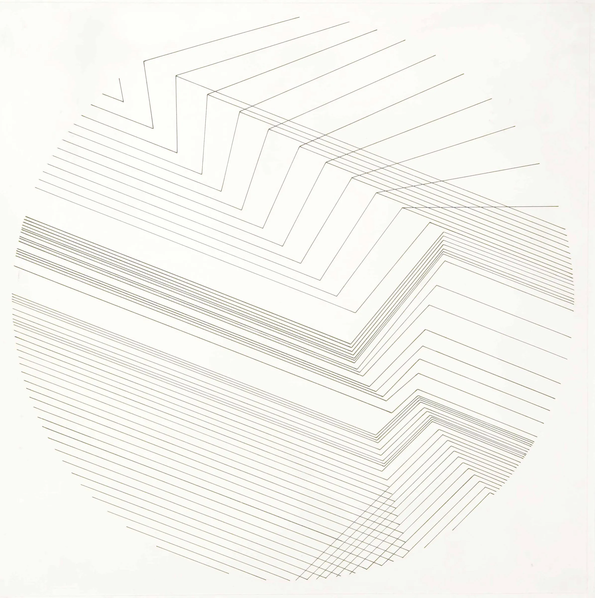

Organizer · Quarterly series
Magenta Teaches
A live knowledge‑sharing series covering subjects relevant to creatives across disciplines. Built to feel less like a panel and more like a magazine column you can attend.
Issue No. 26 — Spring 2026

Featured Case
As editor‑in‑chief at Razorfish, I led the editorial vision for Explore — a branded magazine designed to help readers elevate their passions with tech, not be sold to by it. The publication won industry recognition and became a model for what brand journalism can be when the words come first.

The Portfolio
Long‑running editorial leadership for design‑forward brands and publications.

Founding editor‑in‑chief
Huge's publication for the people who think about people, technology, and design like it's their job. I founded it; I shaped its voice; I'm still proud of it.
Organizer · Quarterly series
A live knowledge‑sharing series covering subjects relevant to creatives across disciplines. Built to feel less like a panel and more like a magazine column you can attend.

Editorial consultant
Editorial strategy for a brand‑transformation studio's digital products — making sure the words carry the same care as the design.

Editor
Editorial strategy for branded events, newsletter campaigns, and the publication itself.

Editor
Brian R. Little's TED Book on personality — edited and shaped for general readers.

Researcher · Writer · Editor
AARP's book and digital experience reframing what it means to age in America.
The Masthead
The Bylines
Reported features, book reviews, and design criticism for national publications.


More from the Archive
The Colophon
Open to editorial strategy, content systems, brand journalism, and writing assignments. Brooklyn‑based, available widely.